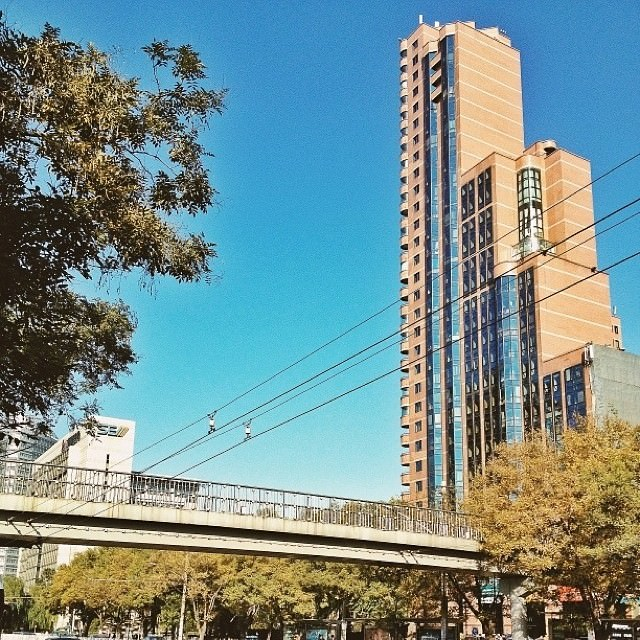

渐行渐远渐无书
回到北京的第一天，应该是几年以来最早的一次了。坐在空荡的公交车上，走在冷清的校园里，想象着几天前这个城市空城的样子。想起这两天看到的知乎上的一个问题，有人问“为什么现在很多年轻人愿意到北上广深打拼，即使过得异常艰苦，远离亲人，仍然义无反顾？”，下面自然是无数精彩纷呈的作答。有义愤填膺的质问：“就你学那破专业，北上广深以外的地方你还能找到工作？”；有不无心酸的自白：“因为我是gay，小地方根本活不下去。”；有过来人般的感慨：“中国为数不多的不扭曲的三观基本仅存在一线城市”；还有现身说法的经历：描述完自己身无分文毅然北漂然后如何苦逼如何努力如何逆袭最后如何牛逼后，总结出这些城市给了我们最珍贵的东西——可能性。还有一个在我看来不那么装逼且比较接地气的回答：“一是因为，中国青年从来都有一种壮志未酬的浪漫主义精神，以及年轻人天生的对未来生活的美好期待，哪怕他们也许没有意识到这期待有时候超出能力而不切实际；二是因为，中国的城市发展太不均衡，很多省会城市都相对闭塞落后城市建设精神建设太差以至于无法吸引有志向的年轻人。” 无论如何，这些或励志或打脸的文字，看看而已，毕竟我想不了那么多，目前也必须生活在这里，并且就是因为一些世俗的原因不能放弃。但我从来没有认为自己要想方设法定居在此，每次有人问起我的打算，我都会说“到时候再看机会吧”。这并不是一种高尚的祖国哪里需要我就到哪里去的螺丝钉精神，也许是一种更严重的浪漫主义情怀，因为我总觉得我的未来充满未知和无限可能，可能某一天会放弃一切皈依出家，可能某一天会带上爱人浪迹天涯，可能某一天会时运不济家徒四壁，可能某一天会柳暗花明飞黄腾达。总之，在这座一些人认为的希望之城里，我不希望能一眼就看到我人生的尽头。不过可悲的是，我总觉得不管脚下的道路通向何方，我们都在离我们挚爱的亲人和故乡越来越远。 渐行渐远渐无书，且歌且和且珍惜。
